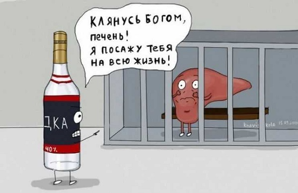

Главный признак перехода бытового пьянства в первую стадию алкоголизма - исчезновение рвоты, что свидетельствует о развитии печёночной недостаточности.
Провалы в памяти, формирование психической зависимости: нервозность при долгом воздержании от употребления алкоголя, улучшение настроения при приближении застолья с выпивкой.
Алкогольная постинтоксикация: головная боль, дрожание рук, отсутствие аппетита, повышенная потливость, слабость. Мысли о спиртном вызывают отвращение, но небольшая доза алкоголя возвращает нормальное самочувствие.
Начало изменения системы ценностей: всё больше находится предлогов для употребления алкоголя, всё меньше обращается внимания на остальные аспекты жизни: рабочие обязанности, помощь семье, финансовую ситуацию и др.